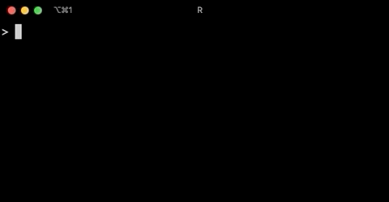
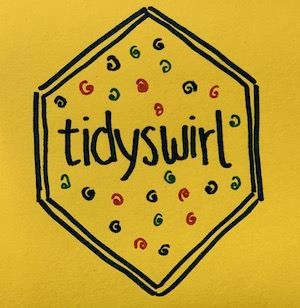

# Install Swirl
install.packages("swirl")
library(swirl)
# Install the Tidyswirl course
install_course_github("matt-dray", "tidyswirl")
# Start Swirl
# Tidyswirl will be one of the course options
swirl()
tl;dr
Contribute to Tidyswirl: a Swirl course that lets people learn the tidyverse from within R.
Note
I never got around to developing this and so I archived the GitHub repo. You should take a look at swirl-tidy by Seo-young Silvia Kim instead.
Swirl
Swirl is a framework for learning R from within R itself. You can install it with install.packages("swirl"). Swirl courses can be created by anyone and installed from nearly anywhere, though the Swirl course repository is the ‘official’ source.
I’ve written before about how the {swirlify} package makes it easier to create Swirl packages.
Tidyswirl
I didn’t talk much in my previous Swirl post about a course I started to develop on GitHub: Tidyswirl. Its purpose is to teach the packages of the tidyverse.

At the time of publication, there are two useable lessons in Tidyswirl: one for {tibble} and one for {tidyr}. I’ve updated these to correct some errors and to improve the experience. In particular, I’ve updated the gather() and spread() functions to pivot_longer() and pivot_wider(), given the update in {tidyr} 1.0.0.
I started with these packages because of the relatively limited number of functions compared to other packages and because they’re involved typically in the early stages of a data analysis workflow.
Try it by installing Swirl and Tidyswirl:
Lesson format
For each lesson, the focal package is introduced and its roles and relationships in a tidyverse workflow are explained.
Selected functions are introduced and explained in conceptual groups, before test questions are asked to let the learner try it out and test their understanding.
Lessons end with a reminder of the package’s purpose and with links to useful external materials.
You can take a look at the lesson files for the {tibble} and {tidyr} lessons as examples, though I’ve also added a template lesson too.
Help!
Tidyswirl is unlikely to be finished anytime soon but it seems worth letting people know it exists. It’d be great for you to contribute to a lesson—which includes writing a new one for any of the other tidyverse packages—or report any issues or bugs you find when using it.
Environment
Session info
Last rendered: 2023-07-24 19:34:16 BSTR version 4.3.1 (2023-06-16)
Platform: aarch64-apple-darwin20 (64-bit)
Running under: macOS Ventura 13.2.1
Matrix products: default
BLAS: /Library/Frameworks/R.framework/Versions/4.3-arm64/Resources/lib/libRblas.0.dylib
LAPACK: /Library/Frameworks/R.framework/Versions/4.3-arm64/Resources/lib/libRlapack.dylib; LAPACK version 3.11.0
locale:
[1] en_US.UTF-8/en_US.UTF-8/en_US.UTF-8/C/en_US.UTF-8/en_US.UTF-8
time zone: Europe/London
tzcode source: internal
attached base packages:
[1] stats graphics grDevices utils datasets methods base
loaded via a namespace (and not attached):
[1] htmlwidgets_1.6.2 compiler_4.3.1 fastmap_1.1.1 cli_3.6.1
[5] tools_4.3.1 htmltools_0.5.5 rstudioapi_0.15.0 yaml_2.3.7
[9] rmarkdown_2.23 knitr_1.43.1 jsonlite_1.8.7 xfun_0.39
[13] digest_0.6.33 rlang_1.1.1 fontawesome_0.5.1 evaluate_0.21 Reuse
CC BY-NC-SA 4.0